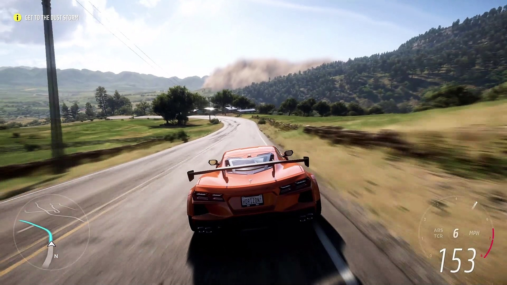

Juego de carreras y mundo abierto en el que puedes conducir cientos de coches por los diversos y espectaculares paisajes de México
Opción desde:
Precio:
75,86€
Forza Horizon 5 es un juego de carreras y mundo abierto desarrollado por Playground Games y publicado por Xbox Game Studios. Es el quinto título de la saga Forza Horizon y la duodécima entrega principal de la serie Forza. El juego está ambientado en una representación ficticia de México, con paisajes diversos y espectaculares. El juego se lanzó en Windows, Xbox Series X|S y Xbox One el 9 de noviembre de 2021
En este juego puedes conducir cientos de coches por los variados escenarios de México, desde desiertos, selvas y playas hasta ciudades, ruinas y volcanes. Puedes participar en diferentes tipos de carreras, como circuitos, rallys o cross-country. También puedes explorar el mundo a tu ritmo, buscando coleccionables, desafíos o eventos especiales.

Forza Horizon 5 tiene un modo historia donde lideras expediciones por el mundo abierto y conoces a nuevos personajes. También tiene un modo online llamado Forza Horizon Online, donde puedes competir o cooperar con otros jugadores en diversas actividades. Además, el juego cuenta con un editor integrado llamado Forza Horizon Creative Hub, donde puedes crear tus propias pistas, eventos o aventuras y compartirlas con la comunidad.
Forza Horizon 5 tiene varias mejoras técnicas y visuales respecto a sus anteriores entregas. Algunas de estas mejoras son:
- Mayor distancia de dibujado y mayor detalle en los escenarios.
- Nuevos efectos climáticos y estaciones dinámicas, que cambian el aspecto y la jugabilidad del mundo cada semana.
- Nueva iluminación y trazado de rayos, que mejoran el realismo de las sombras, los reflejos y las texturas.
- Nueva cámara en primera persona, que permite ver el interior de los coches con más detalle.
- Nueva banda sonora, con más de 200 canciones nuevas repartidas en 10 emisoras de radio.
Forza Horizon 5 es un juego muy aclamado por la crítica y el público, que ha vendido más de 10 millones de copias en todo el mundo. Es considerado uno de los mejores juegos de carreras de la historia, por su extenso y variado mundo abierto, su divertida y fluida jugabilidad, su impresionante apartado técnico y su exitoso modo online.